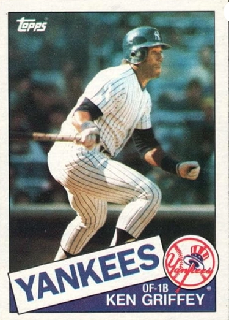

Ken Griffey Sr.
Career Highlights & Facts
(Facts are AI-generated and may require verification)
- Achieved the rare distinction of playing alongside a son in the same professional lineup.
- Participated in back-to-back home runs hit by a father and son during the same game.
- Selected as a key member of a legendary championship-winning roster that dominated the league for multiple seasons.
Would you like to find out more about Ken Griffey Sr.?
Player Biography
Ken Griffey Jr. January 13, 2016 / in BioProject - Person 500 Home Runs , Home Run Champions Hall of Fame , Most Valuable Player 1990s All-Stars , 2000s All-Stars Parent-Child Nuclear Powered Baseball / by admin Emily Hawks While the honor of having the sweetest swing in baseball may seem like it’s a subjective one, few would disagree that Ken Griffey Jr. possessed the sweetest swing there ever was. He was a natural, and his inborn abilities coupled with his youthful enthusiasm ignited an entire city’s passion for baseball. Behind the center-field wall at Seattle’s Safeco Field, beneath the feet of the fans donning backwards baseball caps as a tribute to “The Kid,” one can find two special bricks installed when the stadium opened in 1999. The brick on the left reads “Trey + Taryn Griffey,” and the brick on the right, “The House Their Father Built.” It wouldn’t be long after the mortar had dried that Griffey would leave for what he had hoped would be a storybook return to his hometown of Cincinnati. But frequent trips to the disabled list stifled the talents of one of the greatest center fielders to play the game, and Griffey’s carefree attitude seemed to dissipate along with his playing time. Still, although it is tempting to contemplate what could have been were it not for those injuries, it is still gratifying to marvel at what was. Griffey’s effortless home-run swings, dazzling center-field catches, and 1,000-watt smile lit up the game for an entire generation of baseball fans, and few would dispute that he saved baseball in Seattle. George Kenneth Griffey Jr. was born on November 21, 1969, in Donora, Pennsylvania to parents George Kenneth Sr. and Alberta, better known as Birdie. He shared a birthday and a birthplace with Stan Musial , who was born exactly 49 years earlier in Donora, a former steel town 20 miles south of Pittsburgh on the Monongahela River. Griffey was followed 18 months later by a younger brother, Craig, as well as a sister, Lathesia, two years after Craig. With Griffey Sr., a baseball star himself, the younger Ken Griffey grew up in major-league clubhouses, often spotted in a miniature Reds uniform at Riverfront Stadium surrounded by stars like Pete Rose and Johnny Bench . For the Griffeys, it was about family time. “My dad didn’t care if we watched him play baseball,” said Junior. “He cared about spending quality time with us.” 1 Junior’s time in the clubhouse with his dad would also influence his own eventual path in the major leagues. When Griffey Sr. was with the Yankees, manager Billy Martin requested through one of his coaches that Griffey’s kids be removed from the clubhouse after they’d been playing in the stadium corridors with the other players’ kids before and after a blowout loss. Though 14 kids had joined them, Martin allegedly only wanted the Griffeys gone. 2 From that moment, Griffey Jr. had distaste for the Yankees and ultimately vowed never to play for them. “I don’t forget things like that,” he said. “And I never will.” 3 It wasn’t long before the standout high-school athlete piqued the interest of major-league scouts. One such scout was Tom Mooney. Mariners’ owner George Argyros had directed general manager Hal Keller to promote his then-chauffeur Mooney to the scouting staff in 1984, and Mooney went on to cover Ohio, Michigan, and Indiana for the Mariners. After an abysmal last-place finish in 1986, the Mariners had the first pick in the 1987 draft, and their selection was still very much in the air. In the spring of 1987 Mariners director of scouting Roger Jongewaard joined Mooney to watch Griffey’s Moeller High School team play in a new community park in Cincinnati. The park had a grove of trees roughly 20 yards beyond the outfield fence. In his second at-bat, Griffey lobbed one high into right field and well over the fence. “Which tree did it hit?” Jongewaard asked. “Roger,” said Mooney, “it went over the trees.” 4 High-profile baseball names were also taking note. “I saw Ken Griffey Jr. in high school at Moeller High in Cincinnati and he was the best prospect I’ve ever seen in my life,” said Bobby Cox , then general manager of the Atlanta Braves. `”There was nobody even close to him; he was outstanding.” 5 Still, Mariners ownership was hesitant to take on another high schooler after their 1986 first-round pick, Pat Lennon , had flopped. Also, Griffey had failed a psychological test that baseball teams used to forecast a player’s behavior and character. In fact, his test result was the worst the Mariners had ever seen. 6 While Griffey was averse to retaking the test, he desperately wanted to be the number one pick in the draft. “The thing in our favor was that he knew everyone would remember who the No. 1 pick was,” Mooney recalled. “He was very proud of that and wanted to show his dad.” 7 So Mooney re-administered the test one afternoon at the Griffey house. This time Griffey had an average result. More importantly, though, Mooney saw firsthand in Griffey’s home how he interacted with his mother, grandmother, brother, and friends. He declared him a normal kid, and the endorsement trickled up to the front office. Argyros remained skeptical, but he reluctantly agreed to selecting Griffey after Griffey and his agent agreed to sign for just $160,000. When agent Brian Goldberg told Griffey he might be leaving tens of thousands of dollars on the table, Griffey replied, “I’ll make up for that later. Let’s be No. 1.” 8 In spite of a seemingly bright future, Griffey struggled with turmoil in his teenage years. “It seemed like everyone was yelling at me in baseball, then I came home and everyone was yelling at me there,” said Griffey. “I got depressed. I got angry. I didn’t want to live.” 9 In the summer of 1987, Griffey was playing for the Bellingham Mariners of the short-season Class-A Northwest League. While on the team bus one day, Griffey got into a dispute with the teenage sons of the bus driver. One of them had reportedly expressed racial epithets toward Griffey, while another allegedly threatened him with a gun. Griffey recalled, “Growing up back home I never had to deal with anything like that.” 10 When he returned home to Ohio that fall, he was regularly staying out until the early-morning hours, often worrying his mother. Griffey Sr. decided that his son should either pay rent or get his own place. Griffey Jr. recalled, “I was confused. I was hurting and I wanted to cause some hurt for others.” He had contemplated suicide many times, and on one fateful day in January 1988 he followed his thoughts with action. A 17-year-old Griffey ingested 277 aspirin and wound up in an intensive-care unit in Mount Airy, Ohio. Shortly thereafter, a frightened and angry Griffey Sr. arrived at the hospital and a fight commenced. Though Birdie was distressed, she knew the primary source of conflict and angst for Junior originated with Senior and opted to stay out of the fray. Eventually Griffey Jr. moved into his own condo. While the arguments continued between father and son, an increased understanding began to develop between the two of them. Griffey quickly ascended the minor leagues. His first hit with the Bellingham team in 1987 was a home run, and he finished his first professional season in Low A, batting .313 in 54 games. In 1988, after he clubbed 74 hits in just 58 games for San Bernardino of the Class-A California League, the team retired his jersey. He was promoted to Vermont of the Double-A Eastern League later that season, and the mere 17 games there would be his last as a full-time minor leaguer. Griffey joined the big-league club in Tempe, Arizona, for spring training in 1989, and it didn’t take long for him to make a splash in the Cactus League. He hit .359 that spring and compiled a 15-game hitting streak. He also set Mariners preseason records in three categories with 32 hits, 49 total bases, and 20 RBIs. 11 He had extra incentive to make the Opening Day squad, as his father told him, “This could be my last season, so you had better make the team.” 12 The baseball world quickly took note. Prior to the 1989 season, Baseball America ranked Griffey the best number one draft pick since the draft’s inception in 1966. While an Opening Day roster spot seemed like a foregone conclusion, manager Jim Lefebvre couldn’t resist giving Griffey a hard time. “At the end of spring training, he called me into his office,” Griffey recalled. “He goes through, like, five minutes of stuff like ‘These decisions are so tough,’ ‘You know, we’ve got a lot of veterans that have earned their chance,’ then at the end, he sticks out his hand from across his desk and says, ‘You’re my starting center fielder.’ … And he had managed to keep a straight face the whole time.” 13 Like Lefebvre, Griffey’s teammates also couldn’t help but give the rookie a razzing about his big promotion. The Mariners had one last exhibition game in Las Vegas prior to the season opener in Oakland, and it happened to fall on April Fools’ Day. “I walk into the clubhouse, and everyone’s talking about a big trade we just made for Dale Murphy . Which would mean he’s our new center fielder, not me,” remembered Griffey. “So, I make that long walk to Lefebvre’s office, and he says, ‘I guess you’ve heard about the big trade we made?’ And again, he goes on and on, then finally he says, ‘Do you know today’s date?’” 14 Griffey made his major-league debut on April 3, 1989, at the Oakland Coliseum , facing Athletics ace Dave Stewart . “We got to Oakland, and man, I’m nervous,” Griffey recalled. “Dave Stewart’s on the mound, and he could have rolled the ball up there, I would have swung.” 15 In spite of his nerves, Griffey hammered a 375-foot double to left-center in his first at-bat on the second pitch he saw. “He was scary all night long,” remarked Oakland manager Tony La Russa . “The young man has a world of talent. … He’s going to be something to contend with.” 16 One week later, in his home debut at the Kingdome, Griffey hit his first major-league home run, launching the first pitch he saw from White Sox pitcher Eric King into the left-field seats. 17 Griffey’s quick success led to a near-instantaneous fan following in Seattle. Just over a month after his debut, a Seattle-area trading-card company launched a Ken Griffey Jr. candy bar. Demand quickly soared, and ultimately nearly one million bars were purchased. 18 Ironically, Griffey was allergic to chocolate. 19 By late July, Griffey was a leading candidate for the American League Rookie of the Year award, batting .287 with 13 homers and 45 RBIs. But on July 25 he suffered a fracture in his right hand, purportedly after falling while coming out of the shower in his Chicago hotel room. 20 However, club officials later admitted that the injury occurred when Griffey slammed his hand in anger against a hotel-room wall during an argument with a girlfriend. 21 The incident suggested to Mariners management that Griffey still had a lot of maturing to do. Griffey, who was raised by his mother and grandmother, often struggled with homesickness. “He was the only player I’ve ever dealt with where I’d have to call his mother,” said Mariners GM Woody Woodward . 22 He missed nearly a month of playing time as he healed. After returning to the lineup on August 20, Griffey finished out the year with an additional three home runs and 16 RBIs and ended the season batting .264. He finished third in AL Rookie of the Year voting. He did receive one first-place vote, presumably from Bob Finnigan of the Seattle Times , who wrote, “I will vote for Ken Griffey Jr. … He has brought to the Mariners an exuberance long missing. … Seeing Griffey play almost every day, there is no way I cannot vote for him.” 23 As the 1989 season came to a close, Griffey’s future in Seattle seemed bright. He pondered the possibility of his father joining him in Seattle. “Nothing would make him happier than to be in one game with me,” said Griffey. 24 While Griffey had become known for his swing, he was also increasingly becoming known for his glove. On April 26, 1990, with Randy Johnson on the mound, Yankees right fielder Jesse Barfield , having homered off Johnson in his first at-bat, was aiming for a repeat, and with a loud crack of the bat he launched Johnson’s offering deep to left-center. Griffey ran to the fence, gave it a quick glance, and dug a spike into the soft padding, hoisting his shoulders above the 7-foot-3 wall at Yankee Stadium . With his perfectly timed leap, he robbed Barfield of what would have been his 200th home run. Griffey’s wide grin could be seen even before he landed. His father, who was seated next to Barfield’s wife in the stands, commented, “I think (the smile) was for me.” 25 Though the Griffeys had already made history in 1989, becoming the first father-son combination to play in the major leagues in the same season, that storyline was eclipsed in 1990. Griffey Sr. was released by the Reds on August 18 and was picked up by the Mariners on the 29th, a move the Mariners hoped would help the younger Griffey mature. “A big reason we signed his father was so he would be with him,” said Jongewaard. 26 On August 31 the two Griffeys became the first father and son tandem in major-league history to play in a game on the same team, with Griffey Sr. in left and Griffey Jr. in center. That evening the two hit back-to-back singles in the bottom of the first. “I wanted to cry or something,” said Junior after the game. “It just seemed like a father-son game, like we were out playing catch in the backyard. But we were actually playing a real game.” 27 The fairytale culminated two weeks later on September 14 in a game against the California Angels in Anaheim. In the first inning, Griffey Sr., facing Angels starter Kirk McCaskill , hammered an 0-and-2 pitch 402 feet over the center-field wall. He was greeted at home plate by his son. “I felt for him then,” said Senior. “I knew he would be thinking home run. I could see it in his eyes when I crossed the plate.” 28 What Senior saw in Junior’s eyes soon became reality. Junior came to the plate and ran the count to 3-and-0. He was given the green light by third-base coach Bill Plummer and followed his dad’s lead with a 388-foot shot over the left-field wall. Senior reacted with a quiet clap of his hands in the dugout and waited for his son by the bat rack while his teammates climbed the dugout steps for high fives. Junior looked for his father in the dugout, and the two shared a smile and an embrace. “It’s about time,” Griffey Sr. told his son. 29 The father-son duo played 51 games together before Senior retired the following year. Many credited Senior’s presence for a change in Junior’s demeanor. One clubhouse aide noted, “He toned down when Senior got there. He went from a brash and outspoken kid to someone more respectful of elders. He really quieted down a lot.” 30 Griffey Jr. wrapped up the 1990 season batting .300 with 22 homers and 80 RBIs. He was named to the American League All-Star squad and earned his first Gold Glove. The future appeared bright for the young phenom. In 1991 Griffey continued to dazzle. He was elected to the American League All-Star squad as the top vote-getter in the junior circuit. Griffey was still finding his way, however, and often struggled with the high expectations set for him and criticism by fans and the media. Just before the All-Star break, Seattle Times columnist Steve Kelley published an open letter to Griffey criticizing him for not giving his all. He accused Griffey of playing to be a multimillionaire rather than a Hall of Famer, not running out groundballs and taking a lackadaisical approach in the outfield. Kelley drew talent comparisons to Willie Mays , citing Mays as a player who always strived to reach his full potential and condemning Griffey as one who squandered his talents. 31 Griffey fired back the next day. “People have no idea why I play,” he said. “My thing is I don’t like to be criticized. I hate for people to say I don’t do this right or that right. How do they know?” To fans’ sky-high expectations, Griffey responded, “I’m still learning what I can do. I’m driven. … I’ll never hit 40 home runs in a year. … Numbers are not everything, only if they help the team win.” Griffey was also grappling with the impending reality of his father’s retirement. “That’s why I’ve been struggling, because I don’t want him to go.” 32 Griffey silenced his critics in the second half, batting .373 with 13 home runs and 64 RBIs, and he had much more fun doing it. He credited teammate Harold Reynolds with his turnaround. “We were in Toronto right before the break and Harold sat me down,” Griffey said. “He told me I wasn’t having any fun. He was right.” 33 Griffey took home another Gold Glove as well as the American League Silver Slugger award that season after batting .327. For the first time in franchise history, the Mariners finished with a winning record. Griffey was having more fun off the field as well. After the season he appeared, in animated form, on an episode of The Simpsons titled “Homer at the Bat.” He also collaborated with Seattle-area rapper Kid Sensation to co-write and record a rap song titled “The Way I Swing.” By 1992 there was little doubt as to who was the centerpiece of the Mariners. Third baseman Mike Blowers noted, “There was a lot of pressure on him, not just fans, but from veterans in the clubhouse.” 34 The pressures of big-league stardom coupled with a tumultuous ownership group constantly threatening to sell or relocate the team were difficult for a sensitive Griffey. Still, he managed another stellar season, hitting .308 with 27 homers and 103 RBIs, and winning another Gold Glove. He was also the MVP of the All-Star game, ending a triple short of a cycle. Opposing NL manager Bobby Cox marveled, “He doesn’t have a ceiling that I can see.” 35 After the season finished, Griffey married his girlfriend of three years, Melissa Gay, a Seattle-area native, in a ceremony in Kirkland, Washington. In 1993 Griffey’s power began to take center stage. He clubbed his 100th homer on June 15, becoming the sixth-youngest player to reach that milestone. After being named to his fourth consecutive All-Star team, he became the first player to homer off the B&O warehouse in Baltimore’s Camden Yards , hitting a 445-foot shot during the Home Run Derby. 36 On July 28 he tied the major-league record for consecutive home-run games, homering for an eighth consecutive day, this time into the third deck of the Kingdome. Griffey finished the season leading the American League in total bases (359), winning his second Silver Slugger Award, and finishing fifth in MVP voting. He added a fourth Gold Glove to his trophy case. In January 1994 Griffey became a father when Melissa gave birth to a baby boy, Trey Kenneth Griffey, at a Seattle-area hospital. “He has a full head of hair,” said a proud Griffey. “I mean, he came out with an Afro.” 37 Those around him noted the calming influence Griffey’s family had on him, and his family became the center of his world. “They’re the two most important things in my life,” Griffey said of Melissa and Trey. 38 Griffey’s power streak continued in 1994. He clubbed his 30th home run of the season into the Kauffman Stadium fountains in Kansas City on June 17, tying Babe Ruth’s record for home runs before July 1. “That’s one of the hardest hit balls I’ve ever seen,” remarked Seattle manager Lou Piniella . 39 Griffey went on to surpass Ruth’s record with home runs on June 22 and June 24. He was named to his fifth consecutive All-Star squad, shattering Rod Carew’s record for All-Star votes (4,292,740 in 1977) with a staggering 6,079,688-vote tally. 40 True to form, Griffey credited his father for the votes. “To have his name. … It was a little bit easier for people to look at me and recognize what my dad has done.” 41 Then the players’ strike put an end to Griffey’s stellar season. As baseball shut its doors on August 11, Griffey finished with 40 home runs, the highest tally in the AL. He added another Gold Glove and Silver Slugger to his résumé and finished second in AL MVP voting. He also bolstered his acting résumé, making cameos in the movie Little Big League and the hit TV show The Fresh Prince of Bel-Air. Griffey ventured into the video-game business, partnering with Mariners owner Nintendo to develop a series of video games bearing his name. After baseball resumed in 1995, the Mariners went on to have a season permanently etched in franchise lore, and Griffey played a central role. On May 26, in a game against Baltimore in the Kingdome, he made a catch that would feature in highlight reels for decades to come, scaling the center-field wall to make a backhanded grab of a Kevin Bass bid for an extra-base hit. The dazzling play would ultimately become known as the “Spiderman” catch. However, Griffey suffered a broken left wrist on the play and missed 73 games. He returned to the roster on August 15, and on August 24 he delivered one of the most crucial home runs of the season. The Mariners were in the heat of the wild card race and were trailing the Yankees 7-6 in the bottom of the ninth. After Joey Cora hit a single to tie it, Griffey strode to the plate with two outs and clubbed a two-run homer off closer John Wetteland . From there, the Mariners went on a tear through late August and September, securing their first-ever AL West division championship. 42 The 1995 ALDS pitted the Mariners against the wild-card champion Yankees. The Mariners had home-field advantage, meaning they would open the series in the Bronx (prior to 1998, the ALDS had a 2-3 rather than a 2-2-1 format). Game One went to the men in pinstripes, though Griffey gave a solid effort, going 3-for-5 with two home runs. The Mariners fell to the Yankees again in Game Two in a heartbreaking 15-inning marathon, losing 7-5 in spite of Griffey’s clubbing another home run, going 2-for-6. The series headed back to Seattle, with the Yankees needing just one win for the series victory. Back on their home Astroturf, the Mariners battled back, winning the next two games and forcing a decisive Game Five. The Yankees’ Game One victor David Cone held the Mariners to two runs through seven innings, leaving them trailing, 4-2. Griffey faced Cone with one out in the eighth, sending a fastball into the second deck of the Kingdome, for his fifth homer of the series – a division series record. The Yankees’ lead was cut to 4-3, and Seattle tied the tense contest to send Cone to the showers before the inning ended. After dramatic relief appearances by the Yankees’ Jack McDowell and the Mariners’ Randy Johnson, the Mariners fell behind 5-4in the 11th. In the bottom of the inning a confident Griffey came to the plate with Joey Cora on base. He ripped a McDowell fastball into center for a single, advancing Cora to third. Edgar Martinez came to the plate and bashed a fastball into the left-field corner. Cora scored easily to tie the game, and all 57,411 eyes in the Kingdome turned to Griffey, who represented the winning run. “I saw that (Gerald) Williams was playing toward left-center,” Griffey said. “When I saw the ball land near the line, I ran as fast as I could for as long as I could. When I got to third, Sammy (Perlozzo) said, ‘Keep going!’ So I did.” 43 Griffey slid home safely and was quickly dogpiled by his teammates as they took home the Mariners first-ever division series championship . Griffey’s smile was so bright that it could be seen from the Kingdome rafters. The Mariners went on to lose to the Indians in six games during the ALCS, but their division championship remains etched in fans’ memories as the quintessential Mariners moment. The excitement continued that offseason for Griffey when he and Melissa added a daughter to their family. When Taryn Kennedy Griffey was born, her father noted, “We’ve added a track star to the family,” he said. “I can tell.” 44 On January 31, 1996, Griffey became baseball’s highest-paid player when he signed a four-year, $34 million deal. He clubbed his 200th homer on May 21 at just 26 years old. He enjoyed a huge game against the Yankees on May 24, hitting three homers, scoring five runs, and driving in six. He finished the 1996 season fourth in AL MVP voting, adding another All Star selection (7), Gold Glove (7), and Silver Slugger (4) to his résumé. His popularity soared, and a Nike campaign promoting Griffey as a presidential candidate was ubiquitous. “Griffey in ’96” began appearing on TV commercials, T-shirts, and even bumper stickers. 45 In 1997 construction began on a new Mariners ballpark. Before ground had even been broken, the stadium was being billed as “The House That Griffey Built.” By design, Griffey was the only player to fly up for the groundbreaking ceremony during spring training. “It was the right thing for me,” he said. “I thought it was important that I go.” 46 Griffey led the Mariners to their second American League West Division championship in the 1997 season. He scored an American League-leading 125 runs and bashed a staggering 56 home runs, while leading the majors with 147 RBIs. In addition to garnering what was becoming his standard All-Star-Gold Glove-Silver Slugger trifecta, he was named the unanimous MVP of the American League, snagging all 28 first-place votes. For Griffey, the award was vindication against his toughest critics. “All my life in professional baseball, people said, ‘He could be better,’” Griffey said. “This award means a lot.” 47 On April 13, 1998, Griffey hit his 300th homer. Only Hall of Famer Jimmie Foxx had reached this milestone at a younger age. That same season, he left Foxx in the dust, hitting his 350th home run on September 25 and reaching that plateau at nearly a year younger than Foxx was at the time he achieved it. Griffey was named to his ninth All-Star team in July, this time at the hitter-friendly Coors Field in Denver, and disappointed fans when he opted not to participate in the Home Run Derby. He cited a plethora of reasons, including the Mariners’ travel schedule, a sore wrist, and a poor performance in the prior year’s derby. Yet after the boos rained down over him as he stepped out for American League batting practice, Griffey was taken aback. “I don’t like to get booed,” he said. 48 Minutes later, Griffey re-emerged from the clubhouse with his signature backwards cap and a bat in his hand, ready to participate. “If they want to see me in the home-run competition, the fans, there’s 4 million reasons why I did it, for them.” 49 Griffey made it worth their while, hitting eight homers in the first round, eight more in the second, then beating Jim Thome in the final round, securing the Home Run Derby crown. Griffey finished the 1998 season by matching his prior-season home run total of 56. He finished fourth in AL MVP voting. The 1999 season marked the end of an era in Seattle, in what would turn out to be more ways than one. In July the Mariners moved out of the Kingdome – their home since the franchise’s inception in 1977. Griffey hit the last home run ever to be hit in the Kingdome, on June 27. He tallied 198 home runs in the Kingdome, more than any other player. He was selected to his 10th All-Star Game in July, and won his second straight Home Run Derby title, this time at Fenway Park . He moved into his new home, Safeco Field , two days later. Many were concerned that Griffey’s offense would be stifled in the new, larger outdoor stadium, and that Griffey – whose contract was set to expire after the following season – would flee to more hitter-friendly pastures. In his 42 games at Safeco that summer, Griffey hit .278 with 14 homers. Griffey was one of 100 players nominated as potential vote-getters for the All-Century team in July. During the 1999 World Series, it was announced that Griffey was one of 30 players selected to the team. In November the Mariners announced that Griffey had turned down an eight-year deal worth in excess of $135 million, and had requested to be traded to a team closer to his hometown of Orlando, Florida. Griffey, a 10-and-5 player with 10 years of major-league service and five with the same team, had the power to reject any trade the Mariners proposed. In December Griffey announced that his short list had narrowed to just one team: the Cincinnati Reds. On February 10, 2000, Griffey’s day of reckoning had arrived. He was traded to the Reds for pitcher Brett Tomko , outfielder Mike Cameron , infielder Antonio Perez , and minor-league pitcher Jake Meyer . The Reds signed Griffey to a nine-year, $112.5 million contract. “Well, I’m finally home,” Griffey said in his first press conference at Cinergy Field. As he had in the past, Griffey left money on the table for what he felt was the right decision. “This is my hometown. I grew up here. It doesn’t matter how much money you make; it’s where you feel happy. Cincinnati is the place where I thought I would be happy.” In Griffey’s first season with the Reds, he hit 40 home runs and drove in 118 runs. He also reached the 400-homer milestone on April 10, his father’s 50th birthday. While few would have expected it, 2000 would turn out to be his best Reds season. Later in the season, during a confrontation with broadcaster Marty Brennaman , Griffey admitted to having played hurt all year with a sore hamstring. 50 It was a harbinger of things to come. On Opening Day 2001, Griffey sat out for the first opener in his career with a sore hamstring. He went on the disabled list on April 29. In July Griffey’s former teammate and then-ESPN analyst Harold Reynolds criticized the Reds’ decision to play a recovering Griffey when they were out of contention. “They gave me the green light to play,” Griffey retorted. “If I blow out, I blow out. But I am going to do it under my own terms.” 51 Six games into the 2002 season, the Reds were facing the Expos at home when Griffey was caught in a rundown between third and home. He slipped and twisted his right knee, tearing his patella. Season-ending surgery was contemplated, but Griffey decided to rehab instead. He played 70 games that season, hitting .264 with eight home runs. One bright spot for Griffey that season was the welcoming of adopted son Tevin Kendall in May. Since Melissa had been adopted, the Griffeys always wanted to adopt a child into their family. It was challenging finding the right match, as prospective birth parents were trying to extract favors from the Griffeys once they discovered their identities. However, this time it worked out perfectly, and the Griffeys became a family of five, with all three children sharing the same initials. 52 Ugly rumors plagued Griffey the following offseason, with reports that Reds GM Jim Bowden and manager Bob Boone were conspiring to trade Griffey, considering his acquisition a flop. Griffey, always sensitive to criticism, responded with a combination of the silent treatment and dismissive defiance: “I don’t play for a GM, I don’t play for a manager. I don’t play for an owner. I love playing baseball because I love playing baseball.” 53 Griffey’s bad luck continued in 2003; on July 17 he suffered a season-ending injury rounding first base on a double. He underwent surgery to repair a ruptured ankle tendon. It was the latest in a laundry list of injuries that year that included a dislocated shoulder, which would be surgically repaired in August, tears to both hamstrings, and the aggravation of his previously torn patella. 54 Griffey returned in 2004, and on Father’s Day, with both his parents in attendance, he hit his 500th home run, against the Cardinals in St. Louis. 55 On August 4 Griffey tore his hamstring while making a sliding play in the outfield. He had season-ending surgery on August 16. Griffey bounced back in 2005, hitting 35 home runs with 92 RBIs. He was ultimately sidelined by an ankle injury in September, but won the National League Comeback Player of the Year Award, voted in by the fans. “This award is one I’ll cherish forever,” he said. 56 As the 2007 season commenced, Griffey asked Commissioner Bud Selig for permission to wear Jackie Robinson’s retired number 42, 60 years to the day after Robinson broke the color barrier in baseball. He had also sought the approval of Robinson’s widow, Rachel . Ten years earlier, Griffey had worn number 42 with the encouragement of the Jackie Robinson Foundation, to honor Robinson on the day his number was retired by all of baseball. Selig agreed, and extended the opportunity to all other major leaguers as well. “This is a wonderful gesture on Ken’s part and a fitting tribute to the great Jackie Robinson,” said Selig. 57 Several other players followed suit, and the practice soon became a tradition for players, coaches, and umpires around the league each April 15, Jackie Robinson Day in baseball. The idea originated with Griffey, who said, “It’s just my way of giving that man his due respect.” 58 In June, Griffey returned to Safeco Field for the first time since his trade. He was ambivalent about his return, fearing he might be greeted with a chorus of boos. 59 On June 23 the Mariners held a pregame ceremony to welcome back Griffey and his family. A sellout crowd greeted him with a four-minute standing ovation; there wasn’t a boo heard in the house. The normally stoic Griffey let his guard down during his speech, and appeared to choke back tears. “Never could I imagine it would be like this coming back,” he said in his speech. “I met my beautiful wife here. Two out of my three kids were born here. This place will be home. I didn’t realize how much I missed being in Seattle.” 60 After a sentimental weekend, the wheels were put in motion for a Seattle return. Before that, though, Griffey would make a pit stop with the Chicago White Sox. After hitting his 600th home run on June 9, 2008, with the Reds, Griffey was dealt to the White Sox at the July 31 trade deadline with cash for pitcher Nick Masset and infielder Danny Richar . The White Sox made the playoffs that year, partly due to a spectacular defensive play Griffey made during a tie-breaking 163rd game on September 30 against the Minnesota Twins at US Cellular Field . Griffey threw a strike from center to home in the fifth inning and the Twins’ Michael Cuddyer was out at the plate. The White Sox won, 1-0, advancing to the Division Series, which they lost to the Tampa Bay Rays in four games. A free agent after the 2008 season, Griffey was agonizing over his choice between joining the Braves and the Mariners. Though initially leaning towards Atlanta, which was closer to his Orlando home, ultimately, he chose Seattle. He was reportedly persuaded by Willie Mays, the man who was the reason he wore number 24 with the Mariners. Mays emphasized Griffey’s legacy with the Mariners franchise, as did Griffey’s daughter Taryn, who urged him to go to the Mariners and never have any regrets about how he finished his career. 61 Griffey made a strong impact on the Mariners’ clubhouse in 2009, and his lighthearted antics were reminiscent of his younger self. He could be found playing pranks on teammates during road trips or teasing and tickling a normally composed Ichiro Suzuki during batting practice. “His humor and presence is something I feel only he can do,” Ichiro said. “Everybody considers him to be a genius as a player, but he’s a genius in that respect as well.” 62 Though his bat was fairly quiet in 2009 – he hit just .214 – the Mariners brought Griffey back in 2010 largely for his clubhouse influence. On May 10 a report surfaced that Griffey had missed an at-bat because he was asleep in the clubhouse. 63 Manager Don Wakamatsu had also been limiting Griffey’s playing time due to poor performance. The storybook return began to appear tarnished. On June 2, in the midst of a four-game set at home versus the Twins, Griffey quietly packed up and left in the middle of the night, driving cross-country back to his home in Orlando. He issued a statement through the team, “While I feel I am still able to make a contribution on the field … I will never allow myself to become a distraction.” 64 With that, Griffey had played his last major-league game. Griffey finished his career with 2,781 hits, including 630 home runs. He was a 13-time All-Star and garnered 10 Gold Gloves, seven Silver Sluggers, and one AL MVP Award. He would later be inducted into both the Mariners’ and Reds’ Halls of Fame. While Griffey’s on-field accolades speak for themselves, he considered his proudest accomplishment in life being a good father. He could often be seen at the University of Arizona cheering on his son Trey, a football star, and Taryn, a basketball standout. Griffey is also a pilot and a photography enthusiast. As former teammate Harold Reynolds explained, “I have always believed that Junior’s No. 1 goal in life was to be a dad like his dad. That’s what he wanted to do, more than hitting all the home runs and more than going to the Hall of Fame. Junior loves his kids.” 65 Last revised: November 9, 2015 A version of this biography is included in “Nuclear Powered Baseball: Articles Inspired by The Simpsons Episode Homer At the Bat” (SABR, 2016), edited by Emily Hawks and Bill Nowlin. For more information, click here . Notes 1 Jeff Savage, Sports Great Ken Griffey, Jr. (New York: Enslow Publishers, 2000), 16. 2 Filip Bondy, “Baseball; Griffey Enjoys Clobbering Yankees,” New York Times , July 25, 1991. 3 Bob Finnegan, “Junior in Pinstripes? Not as Long as George is Around – Griffey Still Irked Over Slights by Steinbrenner When He Was a Kid,” Seattle Times, October 5, 1995. 4 Art Thiel, Out of Left Field: How the Mariners Made Baseball Fly in Seattle (Seattle: Sasquatch Books, 2003), 25. 5 Hal Bodley, “Griffey’s Son the Brightest of Stars,” USA Today , July 15, 1992. 6 Art Thiel, 27. 7 Ibid. 8 Art Thiel, 30. 9 Bob Finnegan, “Young Cry For Help – At 17, Griffey Jr. Attempted Suicide; Now He Warns Others,” Seattle Times, March 15, 1992. 10 Ibid. 11 Larry Stone, Ken Griffey, Jr: The Home Run Kid (New York: Skyhorse Publishing, 2013), 6. 12 “Baseball America Rates Seattle’s Griffey Best No. 1 Pick Ever; Second Generation – Griffey, Alomar – Head Big League Prospects.” Baseball America news release, April 5, 1989. 13 Josh Lewin, You Never Forget Your First (Herndon, Virginia: Potomac Books, 2014), 66-67. 14 Ibid. 15 Ibid. 16 Mark Kreidler, “Griffey Jr. wastes no time getting into the swing of things,” San Diego Union , April 5, 1989. 17 Ken Wheeler, “Mariners Come to Life at Home; Knock Off White Sox 6-5,” The Oregonian (Portland), April 11, 1989. 18 Steve Christilaw, “Edmonds Businessman Gets a Big HR – Amazing Success of Griffey Bar Surprises Creator,” Seattle Times , May 24, 1989. 19 “Griffey Jr. Allergic to His Own Candy Bar,” Baltimore Sun, May 8, 1989. 20 Jim Street, “Griffey’s in Drydock After Slip in Shower,” The Sporting News , August 7, 1989. 21 Art Thiel, 34. 22 Ibid. 23 Bob Finnigan, “MVP Up for Grabs; Not Top Rookie,” Seattle Times , October 1, 1989. 24 Bob Sherwin, “Mariner Review: Griffey Captivates Seattle,” Seattle Times , September 27, 1989. 25 Bob Sherwin, “ ‘The Kid’ Provides Another Dazzler for Highlight Films,” Seattle Times, April 27, 1990. 26 Art Thiel, 34. 27 Larry Schwartz, “Griffey Sr. and Jr. first to play together in MLB,” ESPN Classic , November 19, 2003, http://espn.go.com/classic/s/moment010831-griffey. 28 Bob Sherwin, “Back-to-Back HRs for Griffeys – Winfield’s Shot in 7-5 Angel Win Dulls Pair’s Pair,” Seattle Times, September 15, 1990. 29 Ibid. 30 Art Thiel, 37. 31 Steve Kelley, “Junior: Want to be Good – or Great?” Seattle Times , July 8, 1991. 32 Bob Sherwin, “It’s Tough to Pick True Stars – Griffey Replies to Critic: ‘I’m Still Learning,’ ” Seattle Times, July 9, 1991. 33 Jim Street, “Kid Returns Home True All-Star – ‘Potential’ Now a Forgotten Word,” Seattle Post-Intelligencer, October 4, 1991. 34 Art Thiel, 37. 35 Hal Bodley, “Griffey’s Son the Brightest of Stars,” USA Today , July 15, 1992. 36 Milton Kent, “Longest Day for Griffey, Gonzalez – Jr. Hits Warehouse, Juan Goes 473 Feet,” Baltimore Sun, July 13, 1993. 37 Bob Sherwin, “Oh, Baby! Kid Has One of His Own – Son’s Birth Makes Junior a Nervous Dad,” Seattle Times, January 21, 1994. 38 Bill Rabinowitz, “Griffey Raises Hair, Not Hell on Quest,” York Daily Record (York, Pennsylvania) , July 6, 1994. 39 Larry LaRue, “Fleming ‘Brilliant,’ Junior Hits No. 30,” Tacoma (Washington) News Tribune, June 18, 1994. 40 “Bonds, Williams to Start for All-Stars – Griffey demolishes Carew’s record for votes from fans,” San Francisco Chronicle , July 4, 1994. 41 “Griffey Jr: The Six-Million Vote Man,” Columbus (Georgia) Ledger-Enquirer, July 13, 1994. 42 “Career Timeline With M’s,” Kitsap (Washington) Sun, June 2, 2010. 43 Chris Donnelly, Baseball’s Greatest Series: Yankees, Mariners, and the 1995 Matchup That Changed History (New Brunswick, New Jersey: Rutgers University Press, 2010), 249. 44 “Baby Griffey Evens Score,” Seattle Times, October 25, 1995. 45 J. Elizabeth Mills, Sports Families: Ken Griffey Sr. and Ken Griffey Jr. (New York: The Rosen Publishing Group, 2010), 34. 46 Jim Cour, “The house that Griffey built in Seattle, and the new stadium that will go up in the city, both belong to Junior,” Rocky Mountain News (Denver), March 30, 1997. 47 “Griffey Leaves No Doubt Mariners Star is Unanimous AL MVP,” Associated Press, printed in the Roanoke (Virginia) Times , November 13, 1997. 48 Rob Parker, “Fans speak, Griffey listens – AL’s home run leader changes mind, wins Home Run Derby,” Charleston (West Virginia) Daily Mail , July 7, 1998. 49 Larry Stone, “Fans’ Boos are Griffey’s Wake-Up Call,” Seattle Times , July 7, 1998. 50 Hal McCoy, “Junior, Brennaman Have Shouting Match,” Dayton Daily News , August 24, 2000. 51 Hal McCoy, “ESPN Analysts: Junior Should Sit – Reynolds, Gammons Feel Griffey Shouldn’t Risk Further Injury for Last-Place Reds,” Dayton Daily News , July 18, 2001. 52 Larry Stone, “Griffeys Welcome New Family Member,” Seattle Times, May 12, 2002. 53 Jon Heyman, “There’s a Hard Edge to Griffey this Spring,” Kennebec Journal (Waterville, Maine), March 18, 2003. 54 John Fay, “Injury Bug Keeps Stinging,” Seattle Times , July 19, 2003. 55 Kyle Nagel, “Junior’s Career in Cincinnati,” Dayton Daily News , August 1, 2008. 56 Hal McCoy, “Griffey Comeback Winner – Slugger Earned National League Comeback Player of Year Honor,” Middletown (Ohio) Journal News, October 7, 2005. 57 Trent Rosecrans, “Griffey Paying Tribute to Robinson,” Cincinnati Post, April 5, 2007. 58 Barry M. Bloom, “MLB Ready to Celebrate Jackie Robinson Day,” MLB News, April 13, 2009, http://m.mlb.com/news/article/4246882/. 59 Gregg Bell, “Griffey Makes Return to Seattle,” Daily Sentinel (Scottsboro, Alabama), June 22, 2007. 60 Michael Ko, “Plenty of Cheers to Greet Griffey – Sellout Crowd Celebrates Junior, Ex-Mariner has Many Good Memories,” Seattle Times , June 23, 2007. 61 Larry Stone, “Mays Says It Was Griffey’s Decision,” Seattle Times, February 20, 2009. 62 Paul White, “Opposite Griffey, Suzuki Click – Stars Bring Glow to ’09 Mariners,” USA Today, September 22, 2009. 63 Larry Larue, “For Griffey & the Mariners, the End is Near,” Tacoma (Washington) News Tribune, May 10, 2010. 64 Tim Booth, “Ken Griffey Jr. Retiring at Age 40,” Seattle Times, June 2, 2010. 65 Ken Griffey, Big Red: Baseball, Fatherhood, and My Life in the Big Red Machine (Chicago: Triumph Books, 2014). Full Name George Kenneth Griffey Born November 21, 1969 at Donora, PA (USA) Stats Baseball Reference Retrosheet If you can help us improve this player’s biography, contact us . Tags 500 Home Runs · Home Run Champions · Hall of Fame · Most Valuable Player · 1990s All-Stars · 2000s All-Stars · Parent-Child · Nuclear Powered Baseball Share this entry Share on Facebook Share on X Share on LinkedIn Share on Reddit Share by Mail
Career Totals
| WAR | AB | H | HR | BA | R | RBI | SB | OBP | SLG | OPS | OPS+ |
|---|---|---|---|---|---|---|---|---|---|---|---|
| 34.6 | 7229 | 2143 | 152 | .296 | 1129 | 859 | 200 | .359 | .431 | .790 | 118 |
Statistics via Baseball-Reference.com
The Original Clue